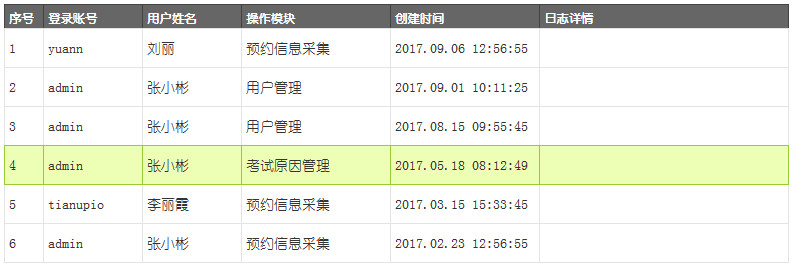
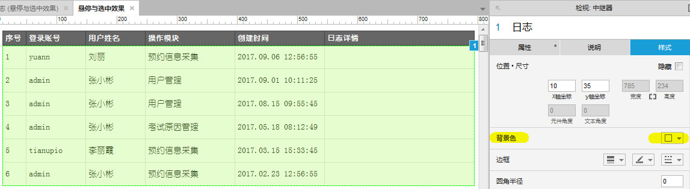
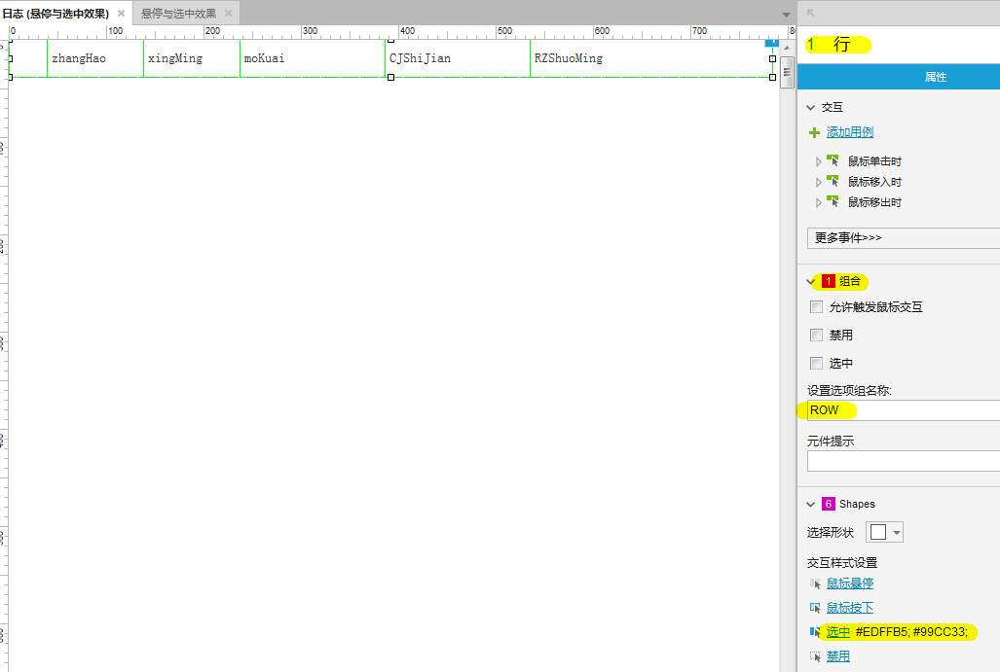
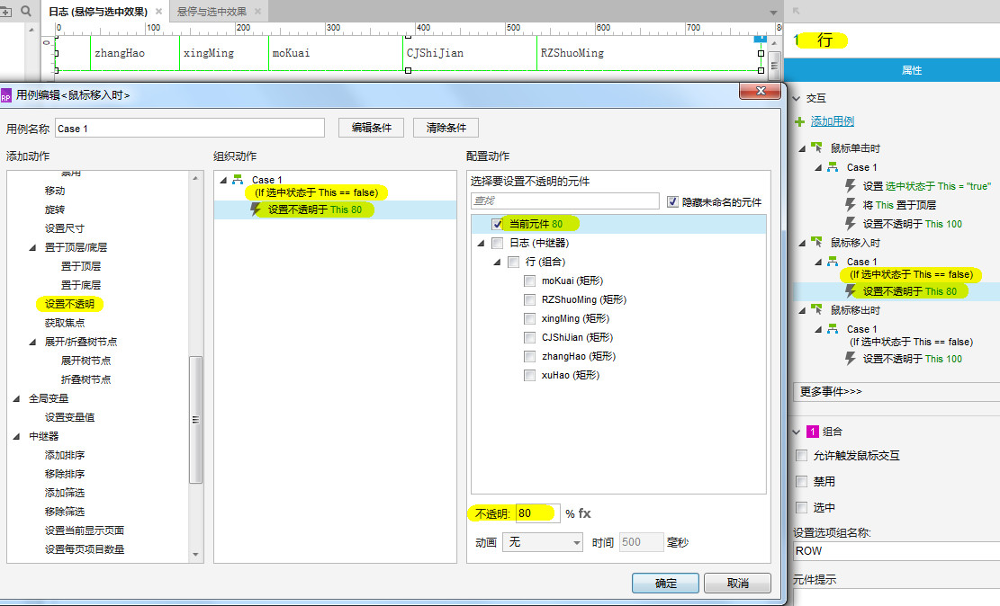
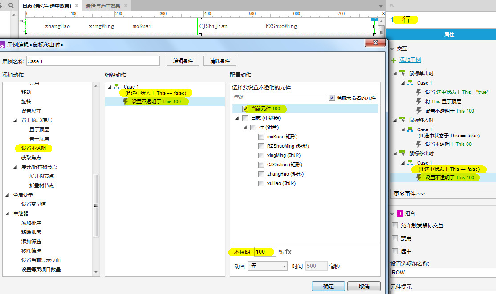
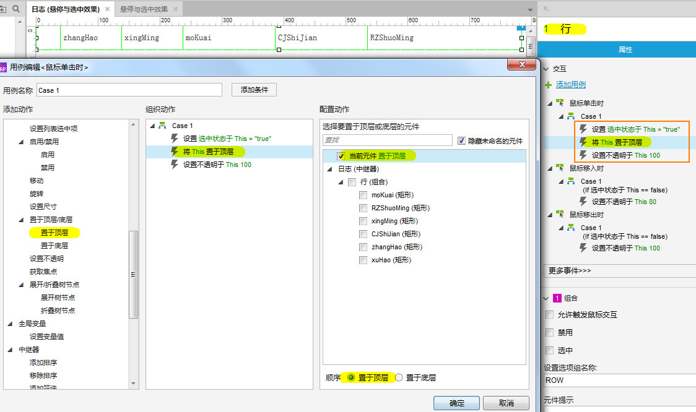
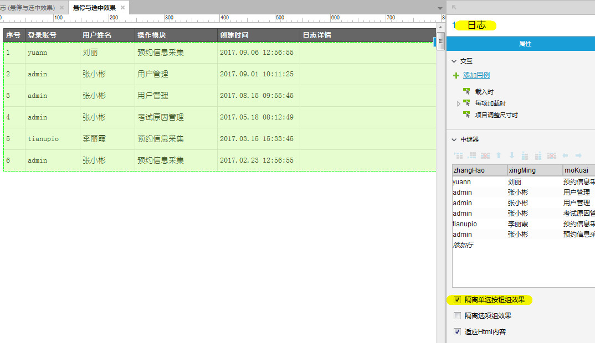
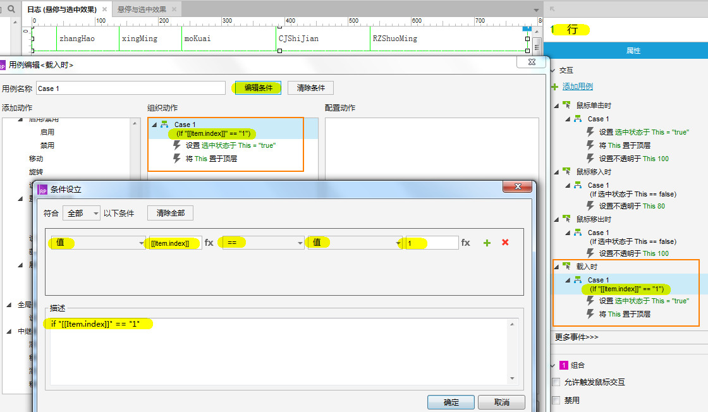

实现原理
- 准备工作
-
- 为中继器设置背景颜色；
- 将中继器的一行进行组合并命名为：行
- 为 行（组合） 设置选中时的样式和选项组名称
- 悬停效果
-
鼠标移入 行（组合）时：当当前行的选中状态为 false 时，设置当前行的不透明度为 80%
鼠标移出 行（组合）时：当当前行的选中状态为 false 时，设置当前行的不透明度为 100%
- 选中效果
-
鼠标单击 行（组合）时：
- 设置当前行的选中状态为 true
- 将当前行的不透明度设置为 100% （此处设置是为了清除鼠标移入时当前行不透明度变成80%的效果）
- 将当前行置于顶层（因为下一行的上边框覆盖了上一行的下边框，所以此处设置是为了将上边框显示出来，这样选中状态设置的边框样式才能完整显示）；
- 要想单击时只选中一行，选中 中继器 后需要勾选 隔离单选按钮组效果
- 载入时默认选中首行效果
-
载入 行（组合）时：
- 设置当前行的选中状态为 true
- 将当前行置于顶层（因为下一行的上边框覆盖了上一行的下边框，所以此处设置是为了将上边框显示出来，这样选中状态设置的边框样式才能完整显示）；
以下为效果图：

详细步骤
准备工作
选中 中继器，为其设置背景颜色 #f2f2f2

将中继器的一行进行组合并命名为：行，为 行（组合） 设置选中时的样式和选项组名称ROW

悬停效果
鼠标移入时：当当前行的选中状态为 false 时，设置当前行的不透明度为 80%

鼠标移出时：当当前行的选中状态为 false 时，设置当前行的不透明度为 100%

选中效果
鼠标单击时：
（1）设置当前行的选中状态为 true ，
（2）将当前行的不透明度设置为 100% （此处设置是为了清除鼠标移入时当前行不透明度变成80%的效果），
（3）将当前行置于顶层（因为下一行的上边框覆盖了上一行的下边框，所以此处设置是为了将上边框显示出来，这样选中状态设置的边框样式才能完整显示）；

要想单击时只选中一行，选中 中继器 后需要勾选 隔离单选按钮组效果

载入时默认选中首行效果
载入 行（组合）时：
- 设置当前行的选中状态为 true
- 将当前行置于顶层（因为下一行的上边框覆盖了上一行的下边框，所以此处设置是为了将上边框显示出来，这样选中状态设置的边框样式才能完整显示）；

完成
至此以上效果均完成!